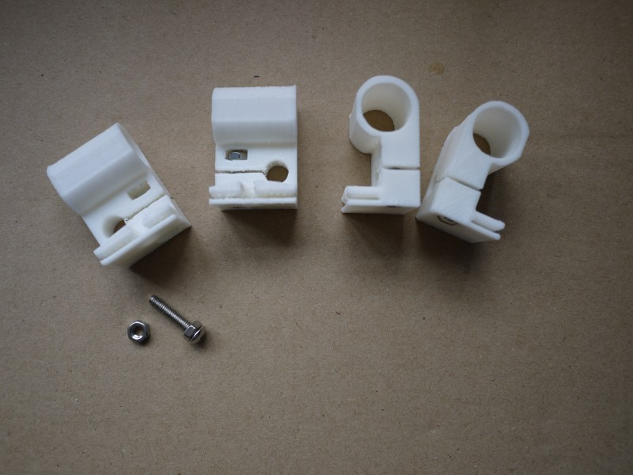
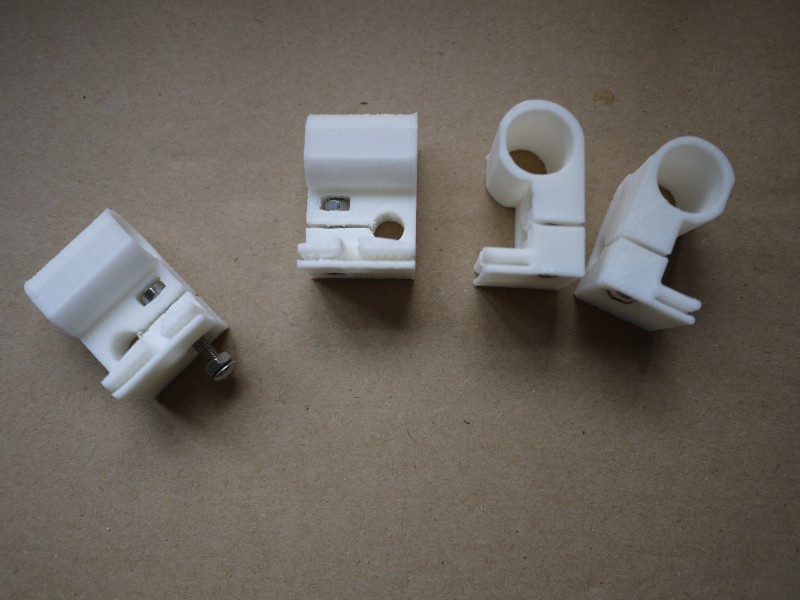
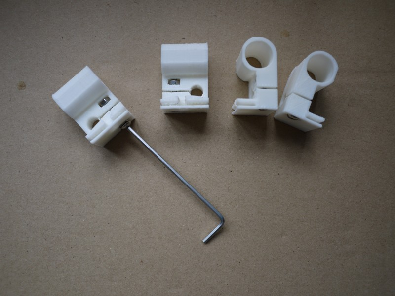
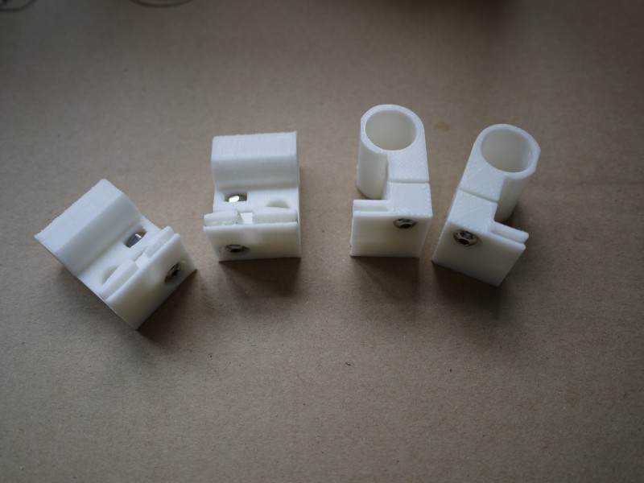
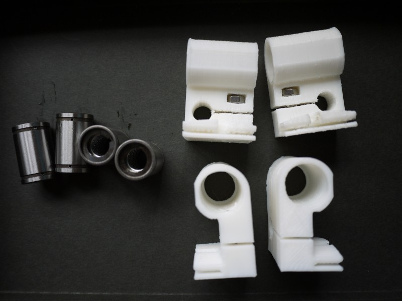
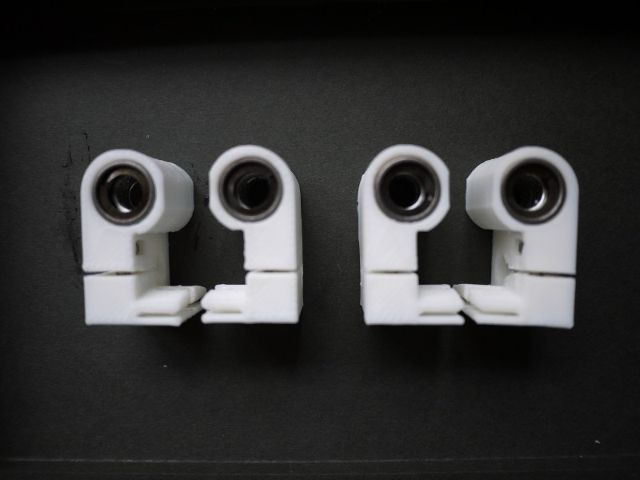

XY尾端滑块的组装
零件列表
| 项目 | 数量 |
| XY滑块（左） | 2 |
| XY滑块（右） | 2 |
| 特殊轴承 | 4 |
| M4*16 螺栓 | 4 |
| M4螺母 | 4 |
安装步骤
准备好4个特殊滑动轴承（内部带金属支持架），4个尾端塑料件，4个M416螺栓，4个M4螺母。（注意：M416螺栓也可以用M4*20螺栓加些垫片代替）
用M4螺栓检查一下尾端塑料件的眼是否可以让螺栓轻松滑动，如果太紧，需要用一个4mm 或 4.2mm的钻头处理一下

将M4螺母放入M4螺母槽中，使螺母中心对准底部的眼，然后从底部的眼旋入M4螺栓

M4螺栓通过M4螺母后旋到底，可以用来固定稍后放入的轴承。

对其他3个尾端滑块做同样的处理

准备好特殊轴承

先把用来咬住轴承的M4螺栓松一下，然后向各个尾端滑块放入特殊轴承，可以需要清理一下轴承槽后用榔头轻轻敲入。

2对尾端滑块组装完毕。